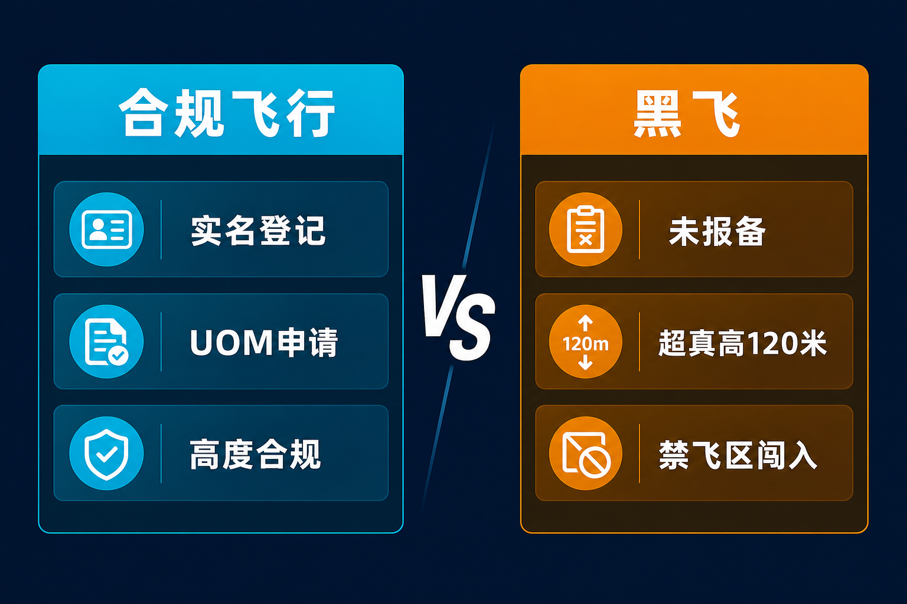
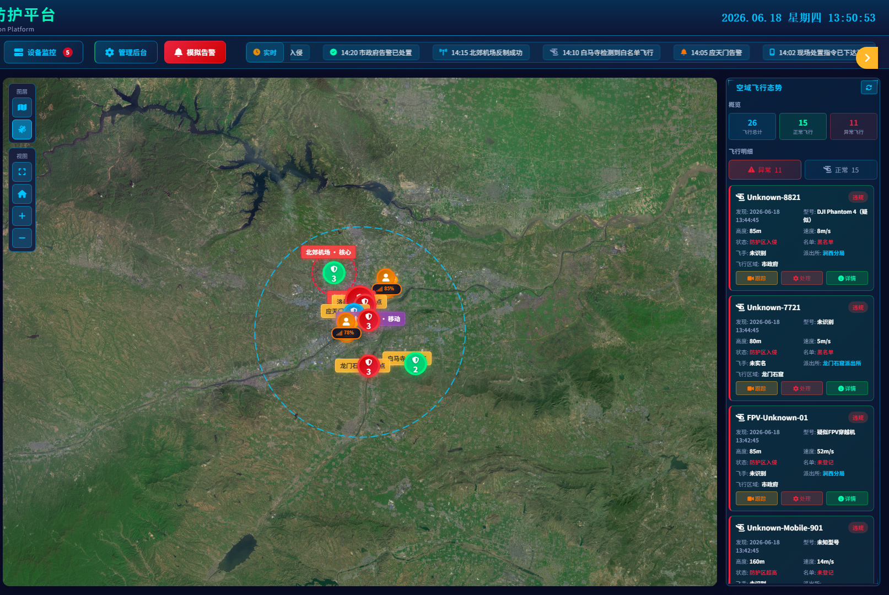

导读 本文面向公安及城市低空安全管理部门，围绕「低空管控体系建设」梳理建设动因、目标重塑、核心能力与分步路径；以昆明「云鹰」公开实践为场景入口，并以广东低空综合管理服务平台作省级对照，供立项对表与方案讨论参考。不涉及具体部署点位、设备参数与内部流程。
导语：天上热闹起来以后，谁来把「管得住」做成日常能力？
据昆明信息港报道，群山阻隔、沟壑纵横的云南，地面警力常难快速抵达；与此同时，无人机航拍、巡检、测绘、物流让低空越来越「热闹」——黑飞、违规闯入管制空域等风险随之而来。昆明市公安局特巡警支队警务航空大队以「云鹰」为名，用直升机与无人机构成一「重」一「轻」两翼，探索平安春城的低空治理方案。
公开材料里有一组很刺眼的对照：2025 年国庆夜滇池沿岸灯光秀期间，低空警务指挥中心发现一条速度偏快、方向异常的轨迹，从预警、定位到引导违规无人机迫降，全程约 40 秒；截至 2026 年 6 月，平台累计监测无人机飞行 21.6 万余架次，登记飞行器约 3.5 万架、持证飞手约 3.1 万人，并圆满保障 COP15、GMS、南博会等重大活动，实现重点区域 零扰飞。
40 秒不是口号，21 万架次也不是展陈数字。它们指向同一个问题：对公安机关而言，低空安全已不是「有没有几台设备」的问题，而是有没有一套能看见、能研判、能调度、能留痕的日常体系。
关键在于从「出事再找人、找设备、找会议」，走向「平时就能跑起来的闭环」。
一 为何必须建：传统办法为什么越来越失灵
对公安机关而言，低空空间正在变成城市公共安全的新场域。传统办法并非完全无效，但在架次上去、场景变杂以后，短板会被放大。
• 第一，视野与时效不够。地面巡逻受建筑遮挡与道路拓扑限制，发现违规飞行往往靠投诉、偶遇或事后溯源。通稿里昆明警航反复强调的，是「地面看、空中巡、系统管」一起织网——说明单靠地面平面防控，已经挡不住「天上的事」。
• 第二，目标类型变复杂。合作目标（依规登记、可识别身份）与非合作目标（静默、改航、未报备）并存。只靠人眼和单一传感，容易出现「看得见影子、定不了性质、派不出力量」。重大活动「零扰飞」之所以难，难在要把误闯、试飞、故意违规在短时间内分清并处置。
• 第三，力量与责任容易断链。发现在感知侧，研判在指挥席，处置在现场单元，复盘在事后材料——若没有统一平台与统一流程，每一环都可能变成「等通知」。架次一高，等待成本就变成安全成本。
• 第四，发展诉求与安全底线同时加压。昆明通稿写得很清楚：低空监管并非简单一禁了之；赏花季航拍、培训销售、物流巡检都在发生。一禁了之伤发展，一放了之伤安全。缺的是「有尺度的管控」与「有温度的服务」同时落地的机制。
地方公开实践给出的信号一致：不是没有设备，而是缺少统一平台、统一流程和统一指挥。设备可以逐年添，体系不能靠临时专项硬扛。
低空越热闹，越要把「管得住」写成可调度的日常能力，而不是写在应急预案封面。

二 目标重塑：从「看得见」到「闭环治理」
建设目标如果只写成「加强低空监管」，立项时好看，落地时容易散。更可对表的表述，是把能力收成可检查的状态。
• 态势可感知。重点空域、重点时段、重点目标能进入统一态势；合作飞行与异常飞行能被区分，而不是混成一团光点。
• 风险可研判。有分级、有阈值、有值班席认领；不是大屏好看，而是告警能被读懂、被排序。
• 力量可调度。空中巡护、地面处警、临时管制、宣传劝导，按预案科目联动；重大险情有「兜底力量」升级路径。
• 过程可留痕。发现、指令、处置、结果可追溯，支撑执法与复盘，也支撑对上对下说明「当时为什么这么做」。
昆明公开材料把主城低空重点概括为「管得住、反应快」；把力量结构概括为无人机日常巡护、直升机应对重大险情——一轻一重、一快一稳。这不是文案对仗，而是编成逻辑：高频日常用轻翼铺开，低频极端用重翼兜底。
省级层面，广东低空飞行综合管理服务平台（公开报道称日均监视全省低空飞行超 5 万架次、处理飞行数据约 8000 万条）则把「飞前—飞中—飞后」写成 AI 赋能的运行管理模式：飞前做容量评估与合规校核，飞中做态势与流量调控，飞后做台账调取与复盘评估，并强调可联动公安处置黑飞溯源。市级公安体系与省级运行管理平台并不互相替代：一个更贴警务指挥与现场处置，一个更贴空域运行与产业服务；城市要对表的，是两边接口能不能通、责任会不会悬空。
建设目标的核心，不是堆设备，而是建闭环。
三 核心能力之一：态势感知与统一指挥
1. 为什么单点感知不等于态势能力
买了侦测设备，不等于有了态势。常见断点有三类：数据进不了同一张图；告警没有等级与责任人；指挥席看不到「此刻可调的力量在哪」。结果是：现场已经紧张，后台还在找电话；或者后台有告警，现场不知道该劝导、驱离还是升级。
昆明公开路径里，有一个可迁移的词：实体化运行低空警务指挥中心，并搭建无人机管控平台，培育持证专业飞手队伍，以功能模块承担侦测预警、空中处置协同与指挥调度一体化。通稿用「天枢、驭风、猎空」概括数字管控、应急救援、空中侦测等任务分工——名称各地可以不同，但「任务模块化 + 指挥实体化」这件事本身，比再买一台单机更接近体系。
公开报道还提到「1+4+N」智能天网表述：一个指挥中枢、多张防控网、多个一线作战单元，让低空情况能够「一屏看清」。对其他城市，不必照搬字母缩写，但要对表三问：中枢在不在？网与网是否连通？一线单元接不接得住指令？

统一指挥中枢 · 态势示意（素材库脱敏图，非具体部署）
2. 指挥闭环要练的是「短链路」
40 秒处置之所以能写进通稿，通常不是因为某一次运气好，而是预警到指令的链路被压短了：谁值守、谁研判、谁下令、谁到场，事先清楚。链路一长，秒会变成分钟；分钟在灯光秀、开幕式、核心商圈里，往往就是舆论与公共安全的窗口期。
• 值班与授权。告警到了谁的席位？什么等级可以自动推送、什么等级必须人工确认？没有授权表，平台只是显示器。
• 科目化预案。误闯、疑似偷拍、疑似扰航、大型活动周边异常，各自对应劝导、驱离、升级、证据固定等动作包。只写「加强处置」等于没写。
• 复盘与台账。广东省级平台公开强调飞后数据调取、异常筛查与黑飞溯源证据支撑；公安侧同样需要把每一次有效处置沉淀为可检索记录，否则培训只能靠口口相传。
3. 与省级/行业平台的接口意识
城市公安体系若只做「自己的烟囱」，迟早会在跨区飞行、产业报备、信用约束上撞墙。广东公开材料把信用体系与智能管控联动作为下一步方向。对市级建设者，务实做法是：先把自己的指挥闭环跑通，同时预留与低空监管服务、空域运行管理的数据与流程接口——不是一上来追求「大一统」，而是避免将来推倒重来。
态势感知的终点，不是大屏动画，而是短链路指挥。
四 核心能力之二：轻翼巡护与重翼兜底的力量编成
1. 轻翼：把日常治理铺开
昆明通稿把无人机写成「空中眼睛」与「空中网格员」：密林沟壑与边境无人区做红外搜索与巡控；汛期沿河查看险情；防火季查找火点；大型活动观察人流密度；突发险情时可升空搜救、喊话、引导。公开口径称累计参与各类应急救援 20 余次。
这提示一条建设原则：低空警务不只是反黑飞。反黑飞是硬任务，但若体系只会「盯违规」，就会在应急、搜救、交通与大型活动中重复建设另一套空中力量。更优的路径是：同一支轻翼力量，按科目切换任务包——巡护、宣传、搜救、临时管控，后台仍回到统一指挥。没有合格飞手与科目训练，轻翼只是「会起飞的展示品」；有了训练，才谈得上稳定输出。
2. 重翼：关键时刻的兜底
直升机在昆明叙事里，承担的是重大险情与快速投送。公开材料举出：主城区约 6 至 10 分钟可达、市辖区多数区域约 30 分钟内空中支援；警用直升机累计安全飞行 8400 余架次，保持安全飞行零事故、零失误；空地联勤快处机制下，曾出现约 13 分钟投送处置力量的公开案例。
重翼贵、养得起、用得少——这恰恰是体系设计要诚实面对的事。建设启示不是「每个城市都上同款」，而是：你有没有定义过自己的兜底手段？可以是直升机，也可以是跨区域支援协议或明确的升级指挥关系。没有兜底定义，轻翼一旦遇到超出能力边界的险情，体系会当场露馅。「宁愿备而不用」值得写进文化与考核：不起飞往往意味着没有重大险情；但备勤状态必须每天成立。
3. 空地一体：编成的真正难点
空中发现之后，地面接不接得住、证据固不固定、群众劝不劝得离。编成表里如果只有飞机，没有地面单元与通信口径，闭环会断在「最后一百米」。对表建议写成三张清单：空中任务清单、地面接驳清单、升级条件清单。三张清单对得上，演练才不是表演。
轻翼铺日常，重翼托极端，空地接得住——这才叫力量编成，而不是「有飞机」。
低空管控核心能力示意（行业方法论配图）
五 服务与尺度：管控不是一禁了之
体系建设若只剩处罚，会把合规飞手与产业主体推向对立面，最终抬高「黑飞」的相对收益。昆明公开做法给出可复制的「柔性治理」切片：
• 先普法、再警示、后处罚。赏花季现场讲解「一登、二查、三申请」；对误入管制空域人员优先劝导。通稿直言：很多时候群众不是故意违规，而是不知道规则。
• 线上办理降低合规成本。实名登记、临时报备、禁飞提醒、计划预审可在专属端口完成；截至 2025 年底，平台登记飞手 5000 余名，备案民用、商用无人机近 9000 架（公开口径）。
• 源头治理。走访销售门店与培训机构，推动张贴登记二维码、留存销售台账，减少无备案飞行器流入。
这些动作看起来「不那么硬」，却直接决定体系能不能长期运转。处罚解决的是个案，服务解决的是大多数人的默认选择。广东省级平台侧强调飞前合规校核与信用联动，和公安侧的登记服务是同一枚硬币的两面：一边降低合规摩擦，一边提高违规成本。
有尺度的管控，才养得出有秩序的低空。
六 分步路径：怎么建，才不至于「一次买齐、长期闲置」
结合公开实践与行业建设经验，城市公安低空管控可按四步推进（各地节奏可压缩，但顺序不宜反）。
• 第一步：定场景、定责任。先明确主城核心区、重大活动场、机场净空协同、应急救援等高优先场景；明确指挥归属、值守席位、跨警种接口。场景不清，设备清单就会变成「什么都想买」。
• 第二步：通链路、练科目。先跑通「发现—研判—调度—处置—留痕」最小闭环，用有限科目周训、月演。宁可先通一条短链路，也不要先上一个谁都不会用的大屏。
• 第三步：组编成、补接口。轻翼日常与重翼/升级兜底写进编成；与交管、民航机场净空、地方低空监管服务平台的接口清单化。广东公开材料展示的飞前飞中飞后能力，提醒城市侧预留数据与证据交接通道。
• 第四步：扩覆盖、做评估。在闭环稳定后再扩展空域与时段；用复盘数据评估误报、漏处置、响应时长与服务转化率，再决定下一轮投入。评估缺位，建设就会变成「设备年年加、问题年年同构」。
行业里把完整链条概括为「察 · 控 · 打 · 评」：看见目标、管住过程、依法处置、复盘评估。城市级建设若要落到可调度的业务系统，需要平台把多源感知与警务流程串起来。羽嘉科技「猎场一号」警用低空防务智能实战平台，定位即是把「察 · 控 · 打 · 评」做成兼容主流侦测反制设备、按公安业务流程开箱即用的闭环能力——设备可以来自不同厂商，流程与指挥不能各唱各的。

察 · 控 · 打 · 评 · 闭环示意
七 误区提醒：立项时最容易踩的坑
• 把建设写成设备采购清单。没有指挥、授权、科目与复盘，采购结束即能力结束。
• 只练顺利起飞，不练中止与升级。体系的成色，往往在「喊得停」「升得级」时才显现。
• 用展示替代值守。重大活动前突击部署，活动后撤空，等于没有日常能力；零扰飞若只靠人海战术，不可持续。
• 服务缺位导致对立。只罚不教、只禁不准，会把潜在合规力量推走，抬高治理成本。
• 烟囱林立。公安、交通、城管、产业平台各建各的「低空大脑」，关键时刻仍然对不上话。
买得起设备，养不起体系——是低空管控立项里最贵的错误。
结 体系建成的标志，不是又一次起飞
昆明「云鹰」公开叙事里，有一句很淡、却很硬的话：队员们更希望战机备而不用；不起飞，意味着没有险情、群众平安。这句话适合作为体系建设的验收隐喻——
体系建成的标志，不是新闻里又一次炫目起飞，而是：平时态势清、告警有人认、指令短链路、空地接得住、服务办得通、复盘留得下。轻翼把日常铺开，重翼把极端托住，平台把过程串住。
从「看不见、管不住、追不回」，到「看得见、调得动、管得住、评得清」，差的从来不是口号，而是一门一门补上的能力与一门一门跑通的流程。
低空会继续热闹。热闹不可怕，可怕的是热闹跑在闭环前面。
信息来源与出处
昆明信息港/新浪：《云岭长空有警翼 昆明「云鹰」守护城市低空平安》（2026-08-04）／昆明信息港/新浪：《起飞！寻找平安春城「新解法」》（2026-08-05）／侨乡广东（新导报）：《广东低空经济装上了「数智大脑」》（2026-08-04）／品牌口径：羽嘉科技公开产品表述
—— 关于我们 ——
羽嘉科技，城市级低空安全解决方案提供商，
「猎场一号」警用低空防务智能实战平台研发者。
让低空管理从「被动应对」转向「主动防控」。
免责声明：本文相关信息引自公开渠道（信源见文中标注），仅供行业交流参考，不构成任何决策依据。如有侵权请联系删除。